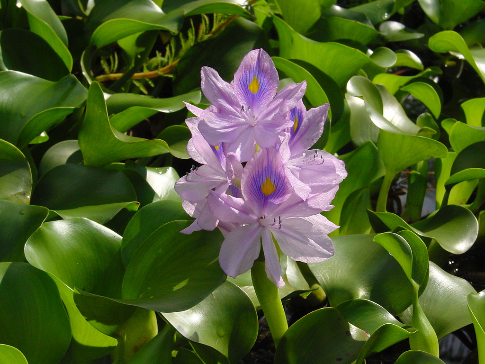

Water Hyacinth: The Water Foe

Imagine you're in a houseboat on a lake. You open the window and the evening sunlight warms your face while the breeze is blowing gently. Then you glance down at the water, but the only thing you see is a field of flowers, water hyacinths. While they look pretty with their flower petals ranging from lavender to pink shades, you can't see the water below. Wouldn't this stay on a boat be better if the lake had lotuses and water lilies on the surface with lily pads around but in an ample amount where you could still see the water body?
The flowers which covered the entire lake are water hyacinths (Pontederia crassipes also known as Eichhornia crassipes (Mart.) Solms). It is a native plant of South America. While the flowers look pretty, this plant is a menace and even nicknamed the ‘Terror of Bengal’. It has broad, thick, glossy leaves. Buoyant bulb-like nodules at the base help the stems float above the surface of the water. They have long spongy bulbous stalks. The purple-black roots are feathery and free hanging. The flower consists of six petals which vary in colour from lavender to pink.
Water hyacinths grow and reproduce very quickly. It can reproduce sexually and by fragmentation. Each plant can produce 1000 seeds per year which remain viable for 28 years. The plant forms dense mats of vegetation and can cover entire lakes and ponds. The mats formed are so thick that they can even support humans walking on it. It easily coexists with other invasive plants and native plants. They outcompete both submerged and floating native plants. They inhibit the growth of phytoplankton, submerged plants and algae by affecting their photosynthesis processes. They even kill fish due to depletion of dissolved oxygen.
Water hyacinths absorb large amounts of heavy metals. It sinks and rots at the bottom of the water body after it dies causing secondary water pollution. Water hyacinth mats are often a breeding place for disease vectors such as mosquitoes and snails and harmful pathogens. However, water hyacinths can act as a food source for goldfishes, keep water clean and help with oxygenation. The plants also have high evaporatranspiration which causes small covered lakes to dry out. The dense mats also prevent waterway transportation as well as fishing possibilities.
The removal of the hyacinths requires a large sum of money. Harvesting the water hyacinths requires considerable effort but as the plant reproduces quickly, it is an excellent source of biomass. One hectare of standing crop produces more than seventy thousand cubic metres of biomass. Bengali farmers use the dry water hyacinths as fuel and the ashes are used as fertilisers. It can also be used in waste water treatment, especially dairy waste water. The plant can be used in weaving handbags, baskets, ropes etc. The plant is also substituted as a carotene rich vegetable and its young leaves and flowers are added in salads.
In Bangladesh, farmers cultivate vegetables on ‘floating gardens’ with a bamboo frame base, with dried water hyacinths covered in soil as bedding. This method is known as dhap chash and vasoman chash. This is done because large portions of land goes underwater for months during the monsoon seasons. The plant has potential for producing bioenergy. In Kenya, biodegradable plastics made from water hyacinths are commercialised. It even has the potential to make strong and tough paper.
Comments